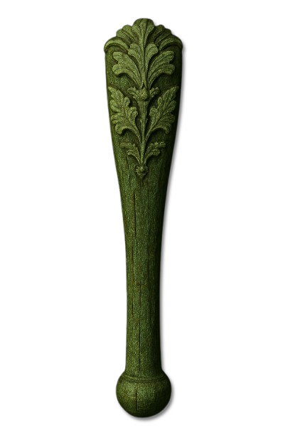
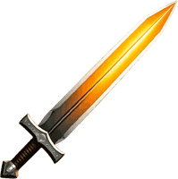
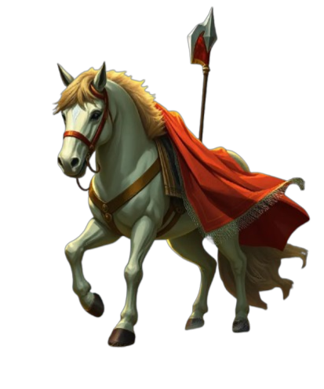
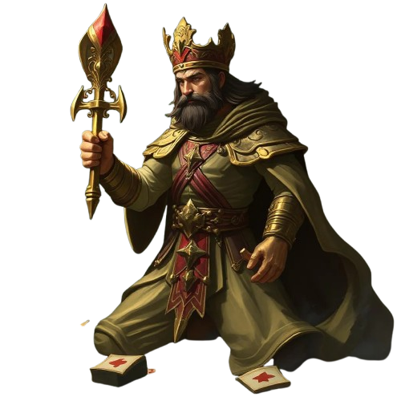

🎯 Objetivo
Ser el último jugador en pie manteniendo tu puntuación por debajo de 150 puntos. Quien supere ese límite queda eliminado.
Domina las reglas y conviértete en una leyenda
Cada ronda mirás una de tus cuatro cartas durante 2 segundos. Después hay 5 segundos para descartar por reflejos: sólo el primero que acierta se salva. En tu turno levantás del mazo y elegís cambiar o tirar — si tirás un 7, 8, 9 o 10 podés usar su poder. Cortás cuando creés tener el puntaje más bajo. Quien supera 150 puntos queda eliminado.
🎮 Crear cuenta y probarSer el último jugador en pie manteniendo tu puntuación por debajo de 150 puntos. Quien supere ese límite queda eliminado.
48 cartas: cuatro palos de doce valores cada uno, del 1 al 12. Sin comodines.




El resto de las cartas vale su número: un 7 son 7 puntos.
Cada jugador ve una sola de sus cuatro cartas durante dos segundos. Después vuelve a taparse sola. Si no elegís, se destapa la primera.
Se da vuelta una carta en el centro. Todos la ven al mismo tiempo.
Todos pueden descartar a la vez, y acá se define media partida:
Descartar es opcional: si no estás seguro, podés pasar.
Por turnos, cada jugador levanta una carta y elige:
Sólo se activan si tirás la carta sin cambiarla. Se usan en el momento: no se guardan. Usarlos es opcional.
En tu turno, después de levantar, podés cortar. Tirás una carta boca abajo, se revelan todas las manos y se suman los puntos.
La mano pasa al jugador de la derecha, se reparten cuatro cartas nuevas y vuelve a empezar. Los totales se arrastran de una ronda a la otra.
| Nivel | Error | Reacción |
|---|---|---|
| Fácil | 30% | 2–4 s |
| Medio | 15% | 1–3 s |
| Difícil | 5% | 0,5–1,5 s |
| Experto | 0% | 0,3–0,8 s |
También cambia cuánto recuerdan de lo que ya vieron.
Se aprende jugando. La partida contra la máquina no necesita cuenta.
🎮 Crear cuenta y jugar